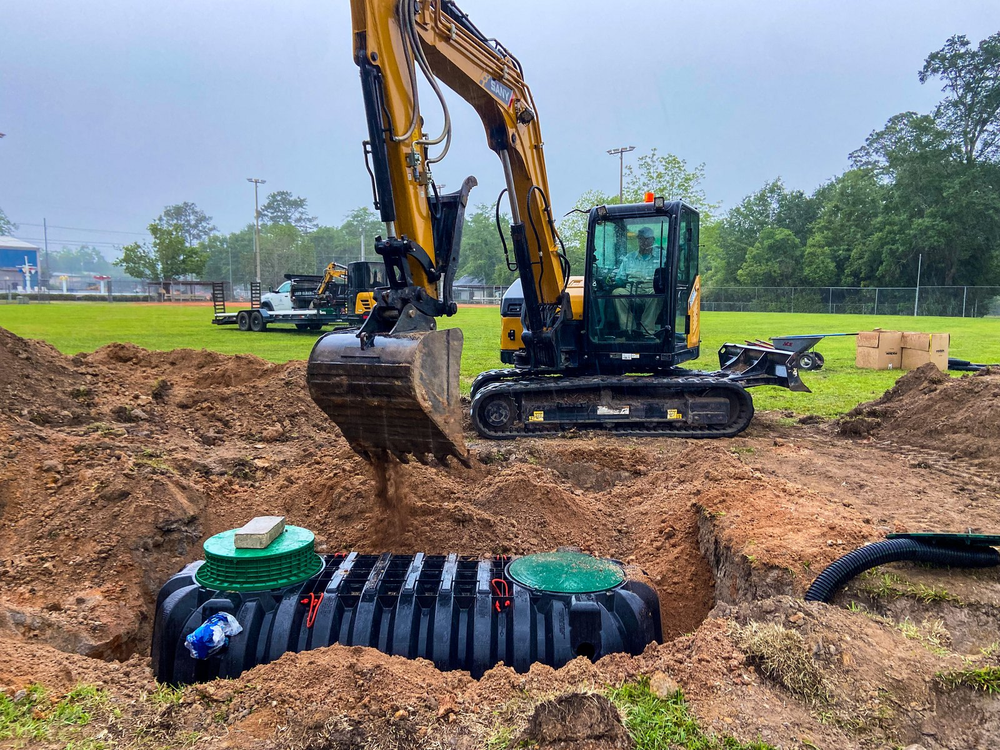
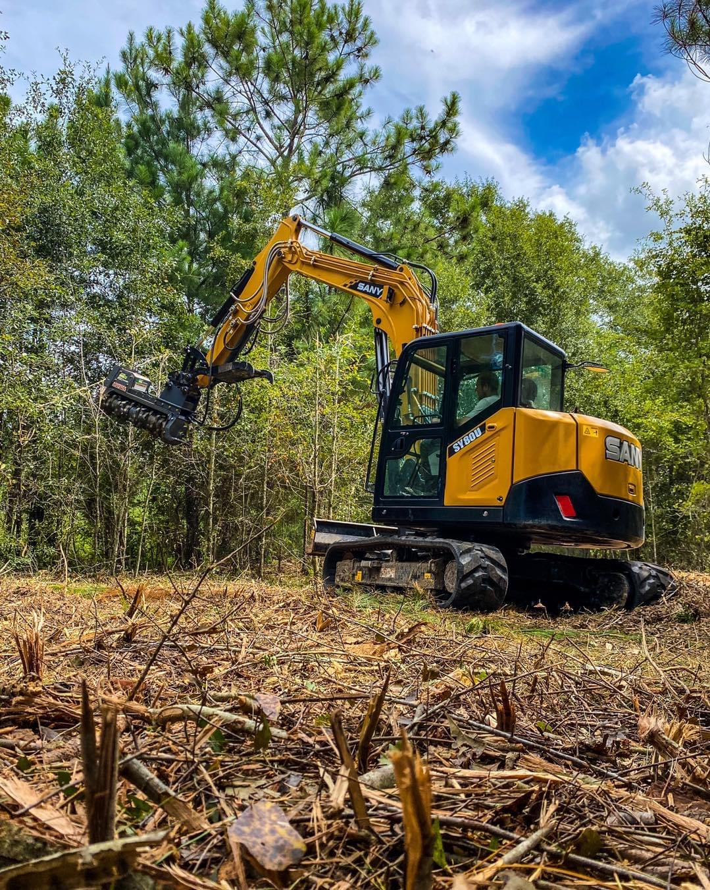
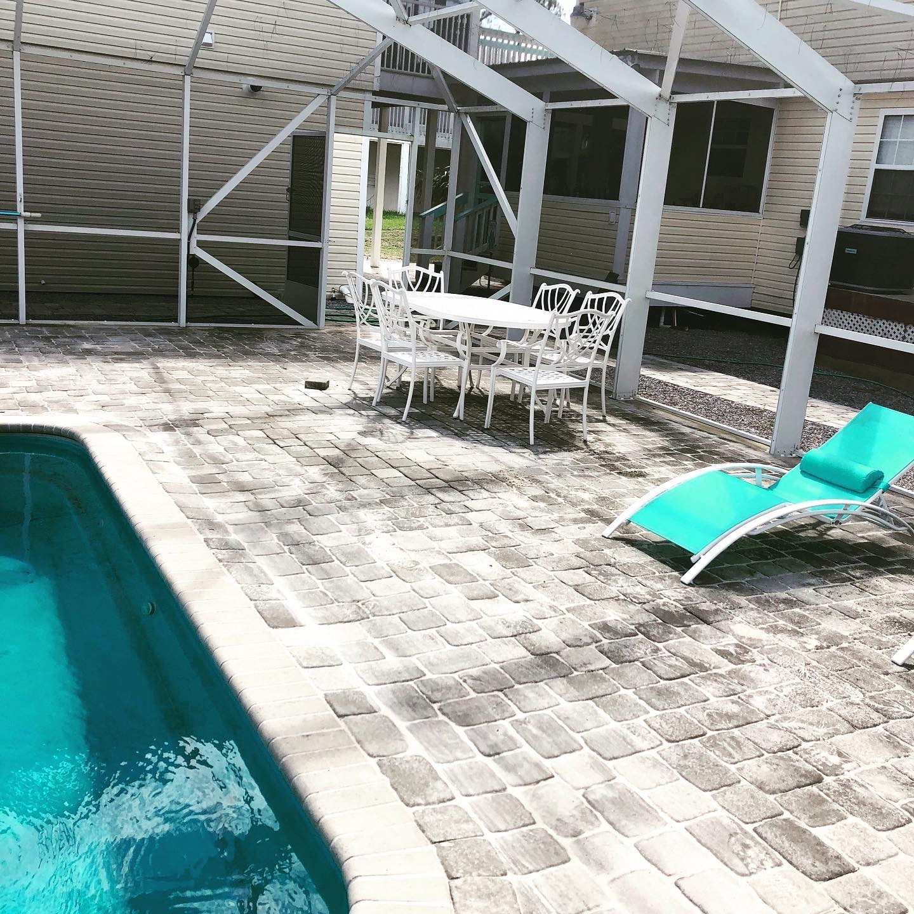
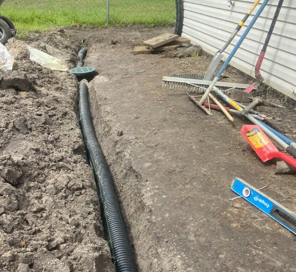
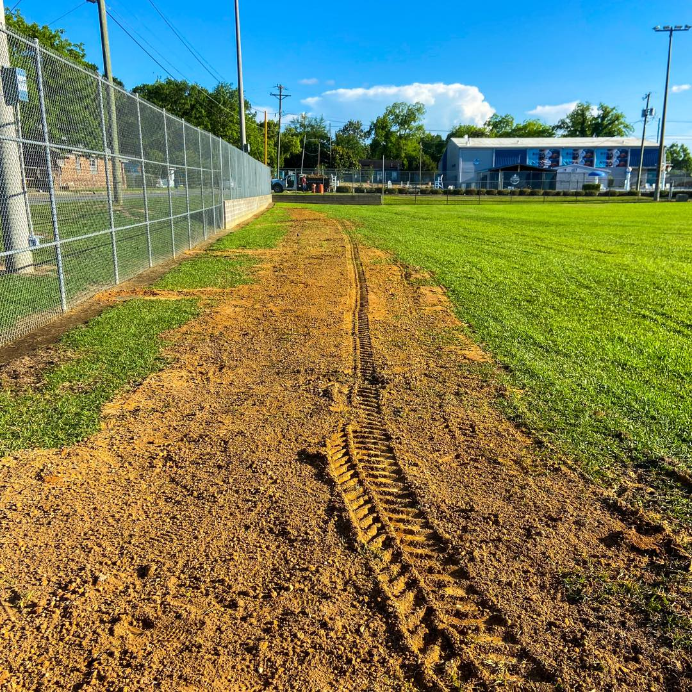
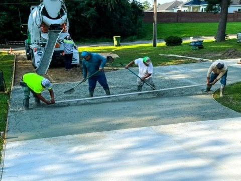

Drain tile and French drains
Underground routes for moving collected water through the property.

services —
From drainage and excavation to driveways, hardscaping, and shoreline protection, ECS coordinates the work your property needs from the ground up.
Drainage, earthwork & finished-site construction
drainage expertise —
ECS provides residential and commercial drainage work built around collection, conveyance, grade, and a defined outlet. The goal is a complete path, not a disconnected patch.
Underground routes for moving collected water through the property.
Site-specific installation and supporting work for subsurface systems.
Service for systems that need mechanical lift or ongoing attention.
Supporting site work that shapes and carries the route above and below grade.
full-service capabilities —
Each capability can stand on its own. They become especially useful when excavation, access, water, grade, and the finished property need to be coordinated as one job.
Six categories of ground work, shown in photographs of Environmental Construction Services’ own projects.






project gallery —
Browse ECS project photography to see drainage, clearing, excavation, concrete, landscaping, and site work in progress and complete.
View project galleryhave a project in mind? —
Share the work you need completed and the current site conditions. ECS will help determine the services the project requires.